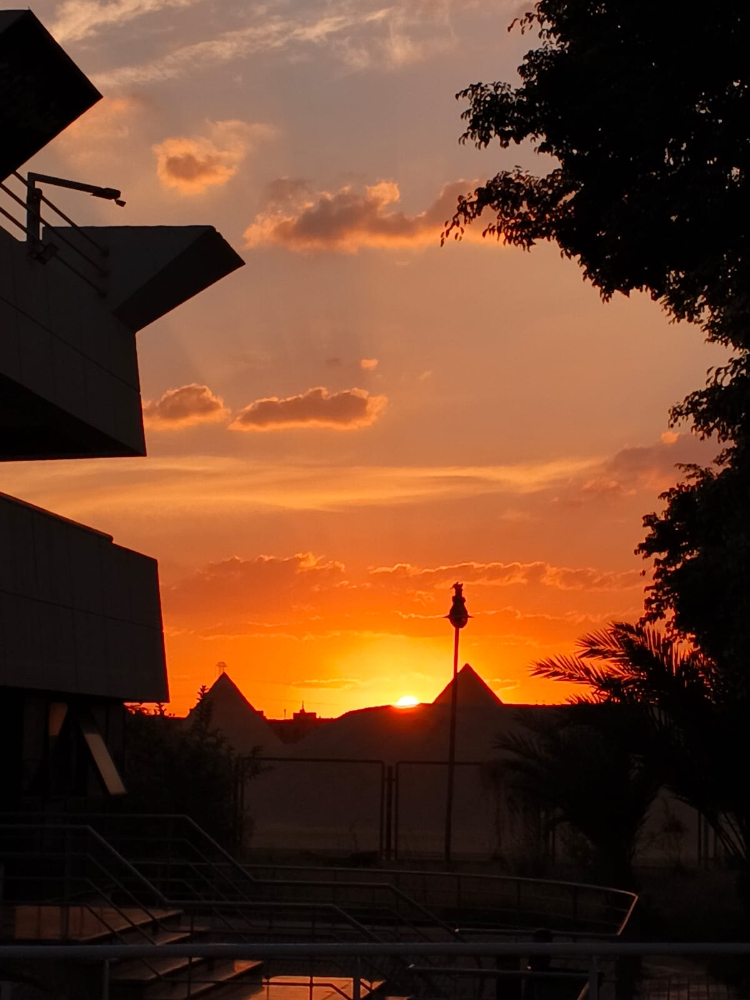

Golden hour
The hour after sunrise and before sunset.
warm clouds, gentle contrast
Sky photography guide
You may think this view will repeat in another day, but rather another life. Memories are like a train, leave so fast, so you gotta catch...
Sky photography treats the sky as the subject instead of the backdrop. Sunrises, storms, star fields and even an ordinary afternoon of drifting clouds all count.
It is one of the easiest genres to start, since all you need is a camera and a view upward. It is also one of the hardest to master, because the sky changes by the minute. The craft is mostly timing: knowing when the light will turn, where to stand, and how to expose for it.

The hour after sunrise and before sunset.
warm clouds, gentle contrast
The short window around sunrise and sunset when the sky deepens to blue and city lights begin to glow.
calm skylines, long exposures
Away from city lights the stars and the Milky Way appear. A tripod and a wide, fast lens do most of the work.
stars, moonlit scenes
Heavy fronts, towering clouds and breaking light make some of the most dramatic frames. Stay safe and keep gear dry.
texture, drama
Partly cloudy beats clear blue. Clouds catch the light, while an empty sky gives you little to work with.
The best colour often arrives after the sun has already dipped below the horizon.
Once the light fades, steady support is the difference between a sharp frame and a soft one.
Keep the highlights in the clouds from blowing out, then lift the shadows when you edit.
Here, we mean by raw as "Without AI cam". Raw files hold far more colour and brightness information to work with in editing.
For your own safety, never point a camera at the sun without proper protection. It can damage both your eyes and sensor.
Browse my gallery for similar views
Open the gallery